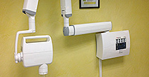
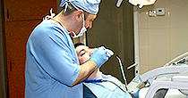
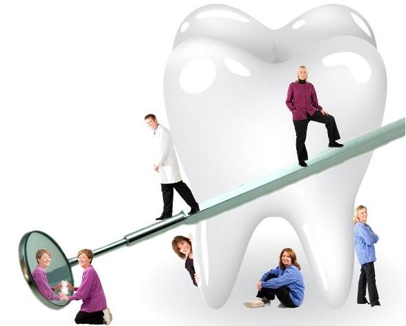

Bine ati venit!
Clinica Healthy Dent este o clinica cu tehnologie de ultima generatie, cu o echipa de specialisti cu experienta in domeniu, ce abordeaza cu profesionalism problemele dumneavoastra. La Clinica Healthy Dent aveti acces la servicii complete de stomatologie, ortodontie, endodontie microscopica, parodontologie, chirurgie orala, implantologie, estetica faciala, si chirurgie maxilo faciala in conditii de siguranta, confort, rafinament si eleganta. Scopul nostru este de a oferi pacientilor un tratament la cele mai inalte standarde de calitate.
|  |  | |
|---|---|---|
| RADIOLOGIE O imagine radiografică este format de o explozie controlată a radiației cu raze X… |
ALBIREA DINŢILOR Albirea reface culoarea dintelui și-i dă strălucire dincolo de culoarea naturală… |
GARANŢIA CALITĂŢII TRATAMENTULUI Controlul periodic este necesar pentru a monitoriza evoluţia în timp a părţii… |
Servicii
|
 |
|---|
Curiozități despre dinți care te vor face să îi privești altfel

- Dentiția temporară se formează înainte de naștere şi apare în jurul vârstei de 6 luni. Totuşi, 1 din 2.000 de copii se nasc cu dinţii erupţi.
- De ce apar cariile? Ne spune istoria. Copiii din era preistorică dezvoltau carii foarte rar, pentru că zahărul era inexistent în regimul lor.
- Cea mai puternică substanţă din corpul nostru este smalţul. Este chiar mai rezistent decât oasele.
- Dacă eşti dreptaci, vei tinde să mesteci mâncarea pe partea dreaptă. Stângacii vor mesteca mai mult pe partea stângă a cavităţii bucale. Cei ambidextri nu au preferinţe.
- Dacă folosim aţa dentară în fiecare zi, într-o viaţă întreagă consumăm peste 8 km de aţă dentară.